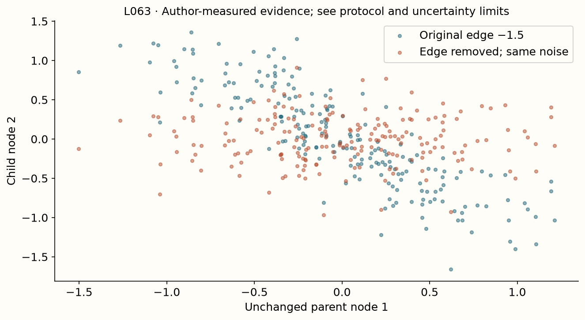

Year 2 · Quarter 3 · Lesson 063
What a synthetic causal prior encodes
Understand the computation. Challenge the evidence. Produce a defensible result.
Core reading: 35–50 minutes. Lab: 45–75 minutes plus declared experiment time. This sequence builds the strong single-table baseline and information discipline required to test the relational thesis.
Retrieve before reading
Without notes: Does a causal pretraining generator identify the true causal graph of a deployment table? Explain why, then recall a related failure mode from an older lesson.
The prior is a distribution over learning problems¶
Your goal is to build a small structural causal model, trace its generated observations, and identify a concrete mismatch between that prior and a possible deployment task. In a PFN, the prior determines which tasks the model practices before seeing your table. It is part of the model's inductive bias, alongside architecture, loss and optimization. Read TabPFN v1, Section 4 and the prior appendix, then compare the TabICL prior description.
An SCM assigns every variable a function of its parents and an exogenous noise variable: V_j = f_j(parents_j, epsilon_j). A directed acyclic graph records which variables can enter each function. Acyclic means that a variable cannot ultimately depend on itself through a directed path, so one can evaluate nodes in topological order. Exogenous noise comes from outside the modeled graph; its independence assumptions are part of the generator, not facts inferred from an arbitrary observed table.
A synthetic dataset generator expresses assumptions¶
A prior over tasks says which learning problems the pretrained predictor should expect. It can vary graph structure, function shapes, noise, observed variables and target construction. Each sampled task then generates many rows from one shared mechanism. The resulting training distribution teaches the predictor which regularities tend to transfer between context and queries.
A structural causal model, or SCM, specifies how variables are generated from their parents and exogenous noise. A directed acyclic graph defines a valid computation order. The graph is not merely a picture of correlations: its arrows identify which computed parent values enter each structural equation.
In the local generator, weights[parent,child] form a strictly upper-triangular matrix. Variables are evaluated in index order, so every parent needed by a child has already been computed. Each child receives an activated weighted parent signal plus its own noise. This convention is visible in the code and must match any hand calculation.
Sampling one graph and set of equations per row would create a different task distribution from sampling one shared mechanism for the whole context/query episode. The learner needs evidence in the context that is relevant to the query. Preserve the episode-level shared latent mechanism when constructing the generator.
The use of causal generators is an inductive-bias choice. It does not imply that the trained predictor identifies the true causal graph of a deployment table or that its ordinary predictions estimate intervention effects. Those are additional inference tasks with additional assumptions.
Compute a graph, not just draw one¶
Our small generator stores weights[parent, child] in a strictly upper-triangular matrix. For node j, multiply already computed parent values by their edge weights, apply tanh and add that node's sampled noise. A zero entry means that edge is absent. Tanh is a bounded nonlinear function; it makes descendants nonlinear even with linear weighted parent combinations.
Start with a linear activation to check arithmetic. For noises [1,.2,−.1] and edges 0→1 of weight 2 and 1→2 of weight −1, node values are [1,2.2,−2.3]. Node 2 uses the computed value 2.2, not the original noise .2. A matrix multiplication of the raw noise by the adjacency matrix is therefore not a general SCM sampler: it skips the recursive dependence.

The lab first verifies this linear fixture, then runs nonlinear four-node models with fixed noise. Reject a lower-triangular entry or a diagonal edge in this representation; silently evaluating it as if it were a DAG produces an incorrectly specified experiment. Other graph orderings are valid, but they must first be topologically reordered or evaluated by a graph algorithm.
Evaluate computed parents, not their raw noise¶
Use a simple three-node chain and temporarily choose the identity activation to make arithmetic transparent. Let noise be ε=(1,2,3), with edge weights w₀₁=2 and w₁₂=−1. Then V₀=1, V₁=2V₀+2=4, and V₂=−V₁+3=−1.
If you mistakenly use raw parent noise for the last equation, you get −ε₁+3=1. The shape of the result is correct, but the effect transmitted through V₀→V₁→V₂ has disappeared. This is why the lab's check uses a multi-edge path rather than testing only isolated parent/child pairs.
With the default tanh activation, the same convention gives V₀=1, V₁=tanh(2)+2 and V₂=tanh(−V₁)+3. Noise is added after the activation in this local function. Moving it inside tanh changes the distribution and the meaning of the noise parameter.
The upper-triangular restriction prevents cycles in this representation. A general cyclic system would require a different definition of how variables are jointly solved or evolved. Rejecting lower-triangular entries is therefore enforcing the declared model class, not an arbitrary storage preference.
Vectorizing across rows is safe because rows share the task's equations but have their own exogenous noise draws. Vectorizing across graph nodes without respecting dependencies is not safe unless the chosen operation explicitly implements the topological recurrence.
Structural noise and measurement noise are different¶
Noise in a node's equation can propagate to descendants. Noise added only to an observed feature after the latent graph is evaluated changes the measurement but need not affect the latent target. These choices can create different learning problems even when marginal feature variability looks similar. A prior card should state where noise enters.
A paired intervention isolates one mechanism¶
The author run changes the edge from node 1 to node 2 while holding all exogenous noise draws fixed. Ancestors remain numerically identical; descendants may change. This pairing makes the effect of that edge visible without confounding it with different random samples. Inspect the full path from the changed parent input through the nonlinear operation to the target.
This is an edge-mechanism intervention. It differs from conditioning on a variable taking some observed value. It also differs from a node intervention such as do(V_2=c), which replaces the entire structural assignment of node 2 with a constant. Name the operation exactly: causal vocabulary should describe the computation performed, not decorate a correlation plot.

Measured interpretation. Removing the selected edge leaves both ancestors exactly unchanged. Mean absolute changes at nodes 2 and 3 are 0.4604 and 0.4607, respectively, on the paired synthetic samples. This isolates the implemented mechanism; it does not identify a real table's causal graph.
Inspect the numerical evidence table
Hold the world’s other ingredients fixed¶
To isolate the effect of an edge, evaluate the same exogenous noise under the original and modified graph. In the identity-activation chain above, removing V₁→V₂ leaves V₀=1 and V₁=4 unchanged, while V₂ becomes its noise value 3. The paired change at V₂ is +4.
If you resample noise at the same time, the difference combines the edge change with a new random realization. That may be a valid comparison of distributions, but it no longer isolates the edge's effect on the same synthetic case. Pairing is the key to the clean mechanism trace.
Only descendants of the changed structural equation can change in an acyclic forward computation, provided all other equations and noises stay fixed. Ancestors should remain exactly equal in the local deterministic evaluation. This gives a strong behavioral assertion for the lab.
Removing an edge changes a mechanism. Setting a node to a fixed value with a do-intervention is another operation: it replaces that node's structural equation. Conditioning on an observed node value is different again. Do not use these terms interchangeably merely because they all involve a graph.
For the lesson's measured synthetic intervention, the conclusion is about the implemented generator. It demonstrates causal propagation inside a known SCM. It does not establish the causal effect of a real-world feature whose generating graph is unknown.
Turn latent variables into a supervised task¶
An SCM alone does not specify a tabular benchmark. You must choose which generated nodes are observed features, which node becomes the target, which remain hidden, how continuous targets become classes, and which rows enter context versus query. Those observation choices can create confounding, redundant features or missing information. The same latent graph can produce very different supervised tasks when you change what the learner sees.
For classification, thresholding a generated target using statistics from all rows would let the query distribution influence task construction. Synthetic pretraining may deliberately define tasks jointly, but that is a generator contract to state, not a preprocessing recipe to copy into deployment evaluation. In the lab, record the threshold rule and use the same sampled task mechanism for context and query unless you are explicitly testing shift.
The four-node tanh generator does not reconstruct the released TabPFN prior. It omits the mixture of function families, graph/width distributions, hidden-node selections, noise distributions and preprocessing choices. The lesson mirrors topological sampling and mechanism intervention, which are independently testable load-bearing parts. A plot that looks “tabular” is not a fidelity certificate.
Observation choices can make a task easy, hard or invalid¶
After generating latent variables, select which nodes become observed features and which node defines the target. If the target node is also included directly among features, the problem can become trivially leaked. The local observation function rejects this overlap and repeated feature-node selections.
A binary target can be formed by thresholding a latent target variable. The threshold is part of the task definition. Choosing it separately for training and test changes label semantics across partitions; choosing it using the full evaluation labels can introduce an unwanted dependence. Use the declared fixed threshold consistently.
Observing causes of the target, effects of the target or noisy proxies yields different predictive information. A method pretrained over one mix of these structures may transfer differently to another. This is a concrete way to reason about prior mismatch without treating “causal data” as one homogeneous category.
Class balance also depends on graph parameters, noise and threshold. A generator that produces nearly one-class episodes may teach a different inference problem from one that deliberately balances every task. Record whether balance is sampled, filtered or forced.
Prior mismatch needs a discriminating test¶
If a pretrained model fails on a real table, many explanations remain possible: preprocessing, unsupported scale, limited context, optimization of a local head or the pretraining task distribution. Prior mismatch is a hypothesis among these, not an automatic diagnosis.
In a controlled synthetic study, change one generator property while holding the evaluation protocol fixed. Compare performance on matched and mismatched task families, including a baseline whose behavior you understand. If the effect follows the changed property and survives implementation checks, the evidence for that mismatch becomes stronger.
The exit prior card should specify graph sampling, structural functions, noise placement, observed nodes, target rule and shared episode variables. It should also list at least one deployment property the generator does not model. This turns an opaque synthetic-data recipe into an inspectable set of learning assumptions.
A hidden variable can make the observed table look complicated¶
Suppose an unobserved variable U affects both observed X and target Y. Even a simple latent graph can create predictive dependence between X and Y. A learner receiving only X does not observe U directly; it must use the information about U carried by X and the labeled context.
Changing which latent nodes are observed can therefore change task difficulty without changing the underlying graph. Observing a nearly sufficient parent of Y can make prediction easy. Observing a noisy distant descendant can make the useful relationship weaker or nonlinear. Prior design includes this observation process, not only edge sampling.
Several latent mechanisms can induce similar or identical observed distributions. Accurate prediction from the observed table does not necessarily distinguish them. This is one reason that a predictor trained on SCM-generated data should not automatically be described as recovering causal structure.
For a controlled prior study, compare observation patterns while holding the sampled latent worlds fixed. Record which nodes became features and how targets were constructed. Then you can ask whether transfer depends on the observed information structure, rather than attributing every change to the graph's complexity or the number of nodes.
Prior mismatch is a hypothesis, not an automatic diagnosis¶
If deployment has abrupt thresholds but pretraining favors smooth functions, a threshold-rich prior might help. If deployment changes its target mechanism over time while synthetic tasks remain stationary, temporal extrapolation may fail. If a necessary parent variable is unobserved, no clever prior guarantees that the target is identifiable from the supplied features.
To test a prior explanation, hold architecture, optimization steps, training-task count and evaluation data fixed, then change the prior component. Otherwise a gain could come from more compute or a different model. Compare in-prior held-out tasks, controlled out-of-prior tasks and real tasks separately. A causal generator does not mean the fitted PFN has identified the true causal graph of your database.
Exit: produce a prior card¶
Submit the graph, weight matrix, topological trace, paired edge intervention and unchanged-ancestor check. Your prior card must name task-function families, noise assumptions, observed/hidden variables, class-construction rules and context/query sampling. Propose one alternative prior and one controlled evaluation that could falsify the claim that it helps. Connect it to the relational mission: which database dependency would a single-table synthetic prior fail to represent?
Run the companion lab
What you will do: Evaluate a synthetic causal graph, remove an edge with noise held fixed, and test which descendants change.
sample_scm: Evaluate the upper-triangular DAG in topological order; use computed parents, not raw parent noise.observe_scm: Build observed X and binary y with a fixed threshold; reject target inclusion or repeated feature nodes.
Author-reference evidence: Paired SCM intervention with fixed exogenous noise.
Submit: your completed notebook and student-l063-exit.json, plus your written interpretation. CHECK cells give immediate code feedback; paste the EXIT output here for a reasoning review.
Student notebook · Prepared lab · Open in Colab
2 substantive code tasks feed the live experiment, followed by behavioral CHECKs and a written EXIT artifact. The notebook contains the explanation and portable figures so it is teachable independently.
Ask me follow-up questions about any operation, CHECK or conclusion you cannot defend. Paste the EXIT artifact and your explanation for review. Revisit the retrieval question tomorrow and again in a week, before reopening the reference.